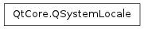

QSystemLocale ¶

Detailed Description ¶
The PySide.QtCore.QSystemLocale class can be used to finetune the system locale of the user.
Warning
This class is only useful in very rare cases. Usually PySide.QtCore.QLocale offers all the functionality required for application development.
PySide.QtCore.QSystemLocale allows to override the values provided by the system locale ( QLocale.system() ).
See also
- class PySide.QtCore. QSystemLocale ¶
-
Constructs a PySide.QtCore.QSystemLocale object. The constructor will automatically install this object as the system locale and remove any earlier installed system locales.
- PySide.QtCore.QSystemLocale. QueryType ¶
-
Specifies the type of information queried by PySide.QtCore.QSystemLocale.query() . For each value the type of information to return from the PySide.QtCore.QSystemLocale.query() method is listed.
Constant Description QSystemLocale.LanguageId a uint specifying the language. QSystemLocale.CountryId a uint specifying the country. QSystemLocale.DecimalPoint a PySide.QtCore.QString specifying the decimal point. QSystemLocale.GroupSeparator a PySide.QtCore.QString specifying the group separator. QSystemLocale.ZeroDigit a PySide.QtCore.QString specifying the zero digit. QSystemLocale.NegativeSign a PySide.QtCore.QString specifying the minus sign. QSystemLocale.PositiveSign a PySide.QtCore.QString specifying the plus sign. QSystemLocale.DateFormatLong a PySide.QtCore.QString specifying the long date format QSystemLocale.DateFormatShort a PySide.QtCore.QString specifying the short date format QSystemLocale.TimeFormatLong a PySide.QtCore.QString specifying the long time format QSystemLocale.TimeFormatShort a PySide.QtCore.QString specifying the short time format QSystemLocale.DayNameLong a PySide.QtCore.QString specifying the name of a weekday. the in variant contains an integer between 1 and 7 (Monday - Sunday) QSystemLocale.DayNameShort a PySide.QtCore.QString specifying the short name of a weekday. the in variant contains an integer between 1 and 7 (Monday - Sunday) QSystemLocale.MonthNameLong a PySide.QtCore.QString specifying the name of a month. the in variant contains an integer between 1 and 12 QSystemLocale.MonthNameShort a PySide.QtCore.QString specifying the short name of a month. the in variant contains an integer between 1 and 12 QSystemLocale.DateToStringLong converts the PySide.QtCore.QDate stored in the in variant to a PySide.QtCore.QString using the long date format QSystemLocale.DateToStringShort converts the PySide.QtCore.QDate stored in the in variant to a PySide.QtCore.QString using the short date format QSystemLocale.TimeToStringLong converts the PySide.QtCore.QTime stored in the in variant to a PySide.QtCore.QString using the long time format QSystemLocale.TimeToStringShort converts the PySide.QtCore.QTime stored in the in variant to a PySide.QtCore.QString using the short time format QSystemLocale.DateTimeFormatLong a PySide.QtCore.QString specifying the long date time format QSystemLocale.DateTimeFormatShort a PySide.QtCore.QString specifying the short date time format QSystemLocale.DateTimeToStringLong converts the PySide.QtCore.QDateTime in the in variant to a PySide.QtCore.QString using the long datetime format QSystemLocale.DateTimeToStringShort converts the PySide.QtCore.QDateTime in the in variant to a PySide.QtCore.QString using the short datetime format QSystemLocale.MeasurementSystem a QLocale.MeasurementSystem enum specifying the measurement system QSystemLocale.AMText a string that represents the system AM designator associated with a 12-hour clock. QSystemLocale.PMText a string that represents the system PM designator associated with a 12-hour clock.
- PySide.QtCore.QSystemLocale. fallbackLocale ( ) ¶
-
Return type: PySide.QtCore.QLocale Returns the fallback locale obtained from the system.
- PySide.QtCore.QSystemLocale. query ( type , in ) ¶
-
Parameters: - type – PySide.QtCore.QSystemLocale.QueryType
- in – object
Return type: object
Generic query method for locale data. Provides indirection. Denotes the type of the query with in as input data depending on the query.
See also
QSystemLocale.QueryType